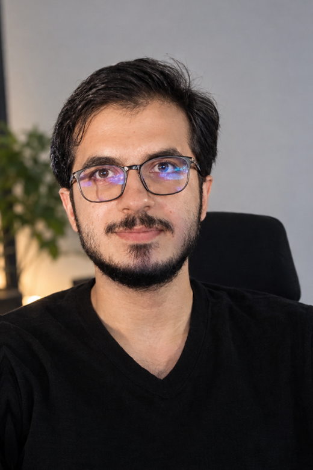

Medicine
Diagnostic reasoning under pressure.
Academic and practical training at Hawler Medical University College of Medicine (2021–Present), strengthening clinical analysis and patient communication.
Medical Student Stagiaire · Paid Media & Digital Operations · Erbil, Iraq
I'm Ahmad — a 24-year-old medical student stagiaire at Hawler Medical University with more than two years of hands-on experience managing $100K+ in Meta Ads for healthcare brands, running e-commerce inventory & order operations, and executing with clinical discipline.

HMU Medicine · $100K+ Paid Ads · E-Commerce Ops
Open to collaborationBalancing hospital rotations at Hawler Medical University with performance marketing and e-commerce operations has shaped how I work: calm diagnostic reasoning, meticulous attention to detail, and dependable follow-through in fast-moving environments.
Explore full CV & backgroundMedicine
Academic and practical training at Hawler Medical University College of Medicine (2021–Present), strengthening clinical analysis and patient communication.
Paid Media
Over $100,000 in Meta Ads managed for healthcare brands at Digital Vision, driving patient acquisition with disciplined budget pacing and creative testing.
Operations
Managing order databases, stock counts, and courier fulfillment at Elara IQ, alongside AI-assisted social video production at @pov.kurds.
Real-world operations in performance advertising, e-commerce fulfillment, financial recordkeeping, and creative media.
Cumulative Meta Ads spend managed across medical and healthcare brands
Hands-on paid media, inventory systems, and operational execution
Main booth lead at Youth Hub 'Are You Healthy?' exhibition
Independent creator channel producing AI-assisted short-form media
College of Medicine. Completing academic and practical clinical training across core medical disciplines while strengthening clinical reasoning, communication, teamwork, and structured problem-solving.
Plan, launch, and optimize Meta Ads campaigns for healthcare and medical brands. Oversee campaign setup, audience segmentation, creative testing, and budget pacing across more than $100,000 in cumulative spend.
Handle daily bookkeeping through transaction logging, invoice organization, and routine account checks in internal systems, keeping operational and financial records traceable.
Manage the primary order database and stock counts. Coordinate picking, order verification, packing, and courier handoff, ensuring items are dispatched quickly with zero discrepancies.
Directed main-booth operations at the 3-day 'Are You Healthy?' exhibition. Managed on-site visitor flow, supported the event team, and delivered hands-on product introductions.
Build and run @pov.kurds. Create short-form video content blending local and cultural perspectives with generative AI production tools—testing hooks, formats, and viewer retention strategies.
Hands-on workflows using Seedance, Veo, and Nano Banana alongside standard editing suites to produce engaging social-first visual assets rapidly.
Meta Ads Manager, audience segmentation, budget pacing, creative testing, and ROAS / CPA monitoring across high-trust industries.
Order databases, product count records, packaging verification, courier dispatch, and internal bookkeeping ledgers.
Modern video generation (Seedance, Veo, Nano Banana), social-first storytelling, and content channel management.
Original video productions created and animated independently — from 3D supplement product visuals to widescreen cinematic worldbuilding.
Atmospheric widescreen animation featuring four warriors overlooking mountain peaks and an ancient fortress at sunrise, with custom environment lighting, animated cloaks, and mountain vistas.
3D product motion graphics showcasing the Ferrobine supplement vial with dynamic neon pedestal lighting, smooth camera rotation, and animated cap mechanics.
Mixed-media animation combining realistic surgical theater environments with symbolic origami character animation, bringing visual emotion to healthcare spaces.
Building practical web dashboards, client performance reports, and internal tools that turn operational and advertising metrics into clear, decision-ready data.
Selected personal market notes and captures. For context, not financial advice.
A documented setup centered on a defined range before a sharp upside move. The original chart captures the structure and projected path.
A long-range gold chart note, mapping the broader trend, key reaction areas, and a personal macro interpretation.
Geopolitics / event markets
A February 2026 note on a US-Iran event market, captured alongside the thesis shared at the time. It is a reminder that timing, narrative, and probability are deeply connected.
Platform-shared captures from selected positions. Past performance is not indicative of future results; all trading carries risk.
“The thesis only matters if you can stay disciplined while it plays out.”
Personal market journalDirect contact & opportunities
Open to conversations around performance advertising, healthcare media, e-commerce operations, or market opportunities.